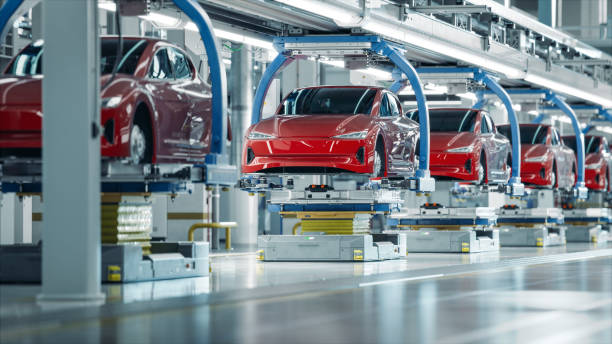

La gestión de la producción es el conjunto de actividades encargadas de organizar, dirigir y controlar los recursos necesarios para transformar las materias primas en productos terminados. Su propósito es fabricar los productos requeridos en las cantidades establecidas, con la calidad esperada, utilizando adecuadamente los recursos disponibles y cumpliendo los plazos de entrega.
En una empresa dedicada a la fabricación de productos plásticos, la gestión de la producción permite coordinar el suministro de resinas plásticas, la preparación de las máquinas, los procesos de moldeo, la inspección de los productos y su posterior almacenamiento. Una adecuada organización de estas actividades contribuye a reducir los costos y mejorar el cumplimiento de los pedidos.
La planificación de la producción consiste en determinar qué se debe fabricar, cuánto se debe producir, qué recursos se necesitan y en qué momento deben realizarse las operaciones. Para lograrlo, se consideran los pedidos de los clientes, la disponibilidad de materias primas, la capacidad de las máquinas y el personal disponible.
Las órdenes de trabajo contienen información sobre los productos que deben fabricarse, las cantidades solicitadas, las especificaciones requeridas y las fechas de entrega. Su adecuada programación permite establecer prioridades y organizar la secuencia de las actividades de fabricación.
Consiste en determinar si las máquinas, los equipos y el personal disponibles pueden cumplir con la producción requerida. Si la demanda supera la capacidad de fabricación, es necesario evaluar alternativas como reorganizar los turnos, reducir los tiempos de preparación o distribuir las operaciones de manera más eficiente.
Comprende la asignación de materias primas, herramientas, equipos y trabajadores para ejecutar las actividades programadas. Una buena planificación evita interrupciones por falta de materiales y permite aprovechar mejor los recursos de la empresa.
Las empresas manufactureras pueden presentar dificultades que afectan el cumplimiento de los pedidos, la utilización de los equipos y los costos de fabricación. Identificar sus causas permite establecer acciones correctivas y preventivas.
Ocurren cuando los productos no se fabrican dentro del tiempo programado. Pueden originarse por falta de materias primas, una planificación inadecuada, cambios inesperados en los pedidos o problemas con la maquinaria.
Se presentan cuando una operación tiene una capacidad inferior a la requerida por el resto del proceso, limitando el ritmo de producción. Por ejemplo, si una fábrica moldea rápidamente las piezas plásticas, pero dispone de una sola máquina para realizar su acabado, esta última operación puede acumular productos pendientes.
Son periodos durante los cuales una máquina o un trabajador permanece sin producir cuando podría estar realizando una actividad útil. Pueden deberse a averías, cambios de herramientas, esperas por materiales o falta de coordinación entre las operaciones.
Una fábrica recibe un pedido de 5.000 recipientes plásticos. El responsable de producción establece las cantidades que deben fabricarse diariamente, verifica la disponibilidad de resina y programa las máquinas para cumplir con la fecha de entrega.
Una empresa identifica que el área de inspección acumula productos pendientes de revisión. Para mejorar el flujo, reorganiza las tareas, capacita al personal y distribuye las inspecciones de acuerdo con la capacidad de cada puesto de trabajo.
Una máquina de moldeo por inyección permanece detenida mientras los operarios buscan herramientas para cambiar el molde. La empresa organiza las herramientas antes de cada cambio y establece una secuencia de preparación, reduciendo el tiempo de inactividad.
| Problema | Posibles causas | Acciones de mejora |
| Retrasos en las órdenes | Falta de materiales, programación deficiente o cambios inesperados en los pedidos. | Planificar las órdenes, verificar los materiales y establecer prioridades de producción. |
| Cuellos de botella | Capacidad insuficiente en una operación o acumulación de productos pendientes. | Analizar el flujo de trabajo, equilibrar las operaciones y mejorar la capacidad del proceso limitante. |
| Tiempos muertos | Averías, preparación prolongada de máquinas o esperas por herramientas y materiales. | Programar el mantenimiento, preparar las herramientas y mejorar la coordinación de las actividades. |
| Incumplimiento de la cantidad programada | Estimaciones incorrectas, baja disponibilidad de equipos o rendimiento inferior al esperado. | Revisar la capacidad productiva, controlar los resultados y ajustar la programación. |